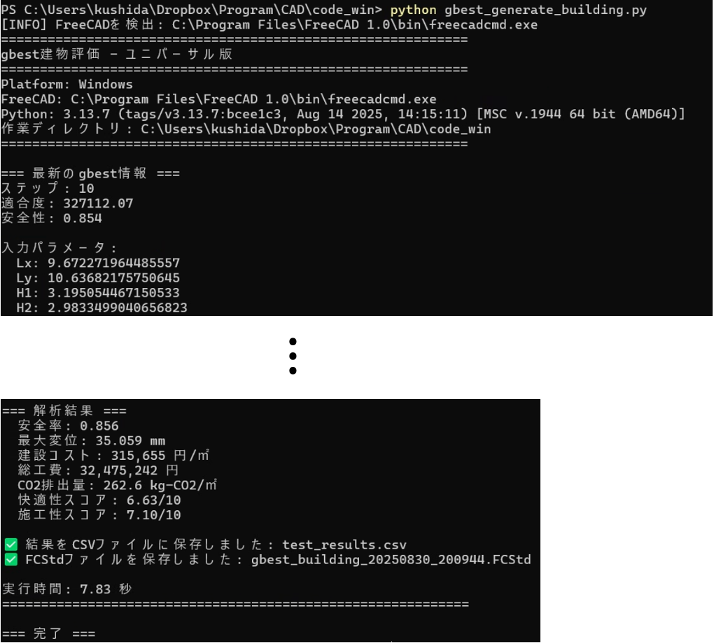

フェーズ3: 最適化手法マニュアル
1. 概要
このフェーズでは，PSOの概念とアルゴリズムの説明，および，PSOの建築デザインへの適用について説明します．具体的には，システムの核となる最適化アルゴリズム「PSO（粒子群最適化）」の理論を学び，実際にPSOを実行して建築デザインの最適化を行います．
2. 学習ステップ
(アルゴリズムの理解)"] --> B["ステップ2: PSO実行
(最適化の実践)"] --> C["ステップ3: プロセス監視
(リアルタイム可視化)"] end style A fill:#e3f2fd,stroke:#1976d2 style B fill:#fff3e0,stroke:#f57c00 style C fill:#e8f5e9,stroke:#388e3c
ステップ1: PSOの理解
PSOの概念については，以下の資料で視覚的に説明しています：
📖 PSOの概念
📚 PSOの解説スライド（PDF）
PSOアルゴリズムの理論的背景，数式，動作原理について詳しく解説しています．
🛠️ 建築設計問題への適用
AI-Archでは，PSOを使って以下の建築設計問題を解きます：
📊 PSOの適用に関する詳細スライド（PDF）
ブラックボックス最適化としての定式化，設計変数の扱い，適応度関数の設計について解説しています．
最適化する対象（20次元の設計空間）
| 設計変数のカテゴリ | 内容 | 次元数 |
|---|---|---|
| 建物寸法 | 幅，奥行，各階高さ | 4次元 |
| 構造部材 | 柱，壁，床，屋根の厚さ | 5次元 |
| デザイン要素 | 壁傾斜，窓比率，屋根形状など | 5次元 |
| 材料選択 | 各部材の材料（木材/コンクリート） | 6次元 |
評価する性能（5つの指標）
| 評価指標 | 内容 | 目標 |
|---|---|---|
| 安全性 | FEM解析による構造安全率 | 2.0以上を確保 |
| 経済性 | 建設コスト（円/㎡） | 最小化 |
| 環境性 | CO2排出量（kg-CO2/㎡） | 最小化 |
| 快適性 | 空間の広がり，採光など | 最大化 |
| 施工性 | 施工の容易さ | 最大化 |
PSOの探索イメージ
粒子数10個，最大反復（ステップ）回数20の場合
初期状態：10個の粒子がランダムな設計案からスタート
↓
反復1：各粒子が設計を評価，良い設計を記憶
↓
反復2：粒子同士で情報共有，より良い設計へ移動
↓
・・・（繰り返し）
↓
反復20：最適な設計に収束
次はステップ2で，実際にPSOを実行してみましょう．
ステップ2: PSOの実行
ここでは，建築デザイン最適化のためのPSO実行方法を説明します．
必要なファイル
PSOの実行には以下の2つの主要ファイルが必要です：
| ファイル名 | 役割 | 内容 |
|---|---|---|
| pso_config.py | 設定ファイル | • PSOパラメータ（粒子数，反復数など） • 適応度関数の定義 • 設計変数の範囲設定 |
| pso_algorithm_win.py | 実行ファイル | • PSOアルゴリズム本体 • 並列処理制御 • 結果の保存処理 |
その他の関連ファイル：
- generate_building_fem_analyze.py - 建物生成とFEM解析
- gbest_generate_building.py - 最適解の3Dモデル生成
これらは全て code_win/ に格納されています．
2.1. 設定ファイルの確認
pso_config.py を開いて，最適化の設定を確認します：
# ========================================
# ★★★ PSOパラメータ設定 ★★★
# ========================================
N_PARTICLES = 10 # 粒子数（探索者の数）
MAX_ITER = 10 # 反復回数（探索ラウンド数）
W = 0.8 # 慣性重み（探索の勢い）
C1 = 1.5 # 個人経験の重要度
C2 = 1.5 # 群れの知識の重要度
# ========================================
# 目的関数（建物の評価方法）
# ========================================
def calculate_fitness(cost, safety, co2, comfort, constructability):
# 基本適応度：コストのみ（低いほど良い）
fitness = cost
return fitness
# 安全性制約版もあります（コメントアウト中）
# 安全率2.0未満にはペナルティを追加
設計変数の範囲
pso_config.pyで定義されている20個のパラメータの探索範囲：
各パラメータは(下限値, 上限値)のタプル形式で定義されます．PSOはこの範囲内で最適な値を探索します．
# ========================================
# 設計変数の範囲定義
# ========================================
variable_ranges = {
# 建物寸法（4個）
"Lx": (8, 12), # 建物幅 [m]
"Ly": (6, 12), # 建物奥行 [m]
"H1": (2.6, 3.5), # 1階高さ [m]
"H2": (2.6, 3.2), # 2階高さ [m]
# 構造部材（5個）
"tf": (350, 600), # 床スラブ厚 [mm]
"tr": (350, 600), # 屋根スラブ厚 [mm]
"bc": (400, 1000), # 柱幅 [mm]
"hc": (400, 1000), # 柱高さ [mm]
"tw_ext": (300, 500), # 外壁厚 [mm]
# デザイン要素（5個）
"wall_tilt_angle": (-30, 30), # 壁傾斜角 [度]
"window_ratio_2f": (0.1, 1.0), # 2階窓面積比
"roof_morph": (0.0, 1.0), # 屋根形態
"roof_shift": (0.0, 1.0), # 屋根シフト
"balcony_depth": (1.0, 3.0), # バルコニー奥行 [m]
# 材料パラメータ（6個）- 0:コンクリート, 1:木材
"material_columns": (0, 1), # 柱材料
"material_floor1": (0, 1), # 1階床材料
"material_floor2": (0, 1), # 2階床材料
"material_roof": (0, 1), # 屋根材料
"material_walls": (0, 1), # 外壁材料
"material_balcony": (0, 1), # バルコニー材料
}
2.2. 計算コストの理解
PSOを実行する前に，計算コストを見積もることが重要です．
基本的な計算式
総評価回数 = 粒子数 × 反復回数
実行時間 = 総評価回数 × 1評価あたりの時間
| 粒子数 | 反復数 | 総評価回数 |
|---|---|---|
| 5 | 5 | 25 |
| 10 | 10 | 100 |
| 20 | 15 | 300 |
2.3. PSOの実行
まずcode_winディレクトリに移動してから，端末上でPSOを実行します：
# PSOの実行
python pso_algorithm_win.py
実行画面の例
実行開始時の表示：
| メッセージ | 説明 |
|---|---|
[START] |
Windowsワーカープール版 PSO 起動 |
[INFO] |
既存の設定ファイルを使用 |
[DEBUG] |
ヘッダーを書き込みました |
🔄 反復 1/10 開始 |
現在の進捗状況 (MAX_ITER = 10の場合) |
実行中の進捗表示
各反復で以下の情報が表示されます：
| 指標 | 意味 |
|---|---|
gbest |
全体最良適応度（コスト） |
pbest_mean |
各粒子の最良値の平均 |
pbest_std |
各粒子の最良値の標準偏差 |
safety |
現在の最良解の安全率 |
出力ファイルの確認
PSOは pso_output/csv/ フォルダに以下のファイルを生成：
| ファイル名 | 内容 |
|---|---|
pso_settings.csv |
実行時の設定（粒子数，反復数など） |
pso_gbest_history.csv |
各反復での最良値の履歴（現時点での最良解の情報が保存される） |
pso_particle_positions.csv |
各粒子の現在位置（20次元の設計変数値） |
pso_pbest_positions.csv |
各粒子の個体最良位置 |
最適化完了時の表示
重要な指標：
-
gbest（全体最良値）: 3.3148e+05 → 約33万円/㎡まで削減
-
safety（安全率）: 1.528 → 構造的に安全な範囲
2.4. 最良解の3Dモデル生成
PSOで発見した最良解（gbest）の建物を3Dモデルとして生成できます：
# 最新のgbest情報から建物を生成
python gbest_generate_building.py
このスクリプトは以下の処理を実行：
- 最良解の読み込み
pso_gbest_history.csvの最新行から最良パラメータを取得- PSO実行中：現時点での最良解
-
PSO完了後：最終的な最良解（最適化の最終結果）
-
3Dモデル生成とFEM解析
- FreeCADで建物の3Dモデルを生成
-
構造解析を実行して性能を確認
-
結果の保存
.FCStdファイル：3Dモデル（FreeCADで開ける）test_results.csv：評価結果を記録
実行画面の例

出力ファイルの詳細：
| ファイル | 内容 |
|---|---|
gbest_building_[日時].FCStd |
最良解の3Dモデル（FreeCADで開ける） |
test_results.csv |
評価結果を追記（test_generate_building.pyと同じ形式） |
このスクリプトにより，PSOで発見した最適設計を：
- 実際の3Dモデルとして可視化
- 詳細な性能評価を確認
- 結果をCSVに記録して比較分析に活用
できます．
次はステップ3で，PSOの実行状況をリアルタイムで監視する方法を学びます．
ステップ3: プロセス監視
リアルタイムモニタリング
PSOの探索が完了するまでには時間がかかるので，別のターミナルを開いて監視ツールを起動し，進捗を確認できます：
# Windowsの場合
python monitor_pso_win.py
注意: モニタリングツールは一度実行すれば，自動的にPSOの進捗を監視し続けます．再実行の必要はありません．ブラウザで http://localhost:5001 にアクセスすると，リアルタイムで更新される進捗状況を確認できます．
モニタリングツール起動画面
起動時の表示：
| メッセージ | 説明 |
|---|---|
Checking if port 5001 is in use... |
ポート確認 |
Starting Web UI at http://localhost:5001 |
Web UIの起動 |
Press Ctrl+C to stop monitoring |
停止方法の案内 |
WARNING |
開発サーバーの警告（本番環境では使用しない） |
Running on |
アクセス可能なURL一覧 |
ブラウザで http://localhost:5001 を開くと，リアルタイムで最適化の進捗を確認できます：
監視画面の表示内容
待機画面（PSO開始前）
PSO開始前は「waiting」状態で，すべての値が初期状態（0 または inf）です．
実行中画面
PSO実行中は「running」状態になり，以下の情報がリアルタイムで更新されます：
| 項目 | 説明 |
|---|---|
| 処理中のステップ | 現在の反復数/総反復数（例：2/10） |
| 粒子数 | 探索に使用している粒子の数 |
| 評価回数 | 完了した評価数/総評価数（例：20/100） |
| 最良適応度 | 現在見つかった最良コスト（例：4.584e+5） |
| 経過時間 | 開始からの経過時間 |
| 進捗バー | 全体の進捗率（%表示） |
【演習】PSOを実行してみよう
演習1: 基本的なPSO実行
目的: デフォルト設定でPSOを実行し，最適化プロセスを観察する
pso_config.pyを開く- 設定を確認（変更不要）：
N_PARTICLES = 10 MAX_ITER = 10 - PSOを実行
- 監視ツールで進捗を確認
- 収束グラフから最適化の様子を観察
確認ポイント:
- 反復が進むにつれて適応度は改善したか？
- 何回目の反復で良い解が見つかったか？
- 得られた解は安全率 ≥ 2.0 を満たしたか？
演習2: PSOパラメータを調整して実験
目的: PSOの制御パラメータを変更し，最適化性能への影響を確認
pso_config.pyを編集して，以下のパラメータを調整：
# 例1: 探索と収束のバランスを変える
W = 0.4 # 慣性重み（小さくすると局所探索重視）
C1 = 2.0 # 個人経験重視（大きくすると自己の最良解を重視）
C2 = 1.0 # 群れの知識（小さくすると全体最良への追従を抑制）
V_MAX = 0.2 # 最大速度（探索範囲の20%まで一度に移動可能）
# 例2: より広範囲な探索
W = 0.9 # 慣性重み（大きくすると探索範囲拡大）
C1 = 1.0 # 個人経験
C2 = 2.0 # 群れの知識重視（大きくすると収束が早い）
V_MAX = 0.3 # 最大速度（大きくすると大胆な移動を許可）
V_MAX（最大速度）について:
- 粒子が1回の反復で移動できる最大距離を制限
- 0.1〜0.5の範囲で設定（探索範囲に対する割合）
- 小さい値（0.1）: 慎重で細かい探索，局所解の精度向上
- 大きい値（0.5）: 大胆な探索，広範囲カバー，収束は不安定
- PSOを再実行
- 演習1の結果と比較
- モニタリング画面の収束グラフのスクリーンショットを保存しておくと，パラメータ変更による違いを視覚的に比較できます
- 各設定での最終的なgbest値と安全率も記録しておきましょう
考察:
- W（慣性重み）を変えると収束速度はどう変わるか？
- C1とC2のバランスで最終解の質は変化するか？
- どの設定が最も良い結果（低コスト＋高安全率）を得られたか？
まとめ
このフェーズでは，以下を学習しました：
- PSO理論: 群知能に基づく最適化の仕組み
- PSO実行: 設定ファイルの編集と実行方法
- プロセス監視: リアルタイムでの最適化状況の確認
PSOによる建築デザイン最適化では，手動では困難な「20個のパラメータの最適な組み合わせ」を自動的に発見し，安全性・経済性・環境性・快適性・施工性を考慮した最適な建築設計を実現できることを体験しました．
次のフェーズ4では，この最適化技術を使った実践的な設計課題を説明します．